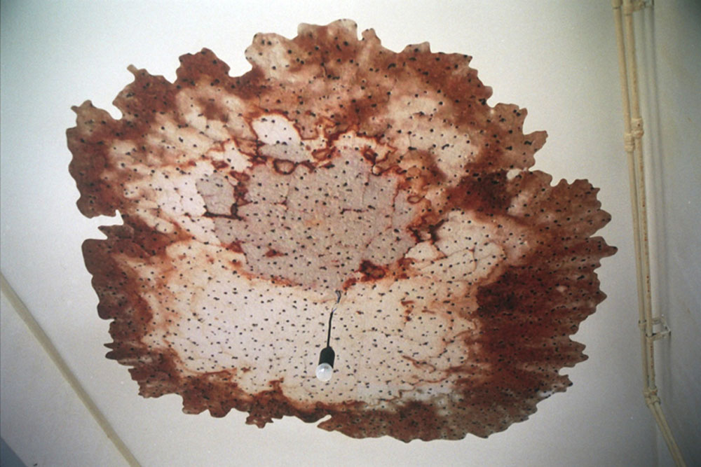
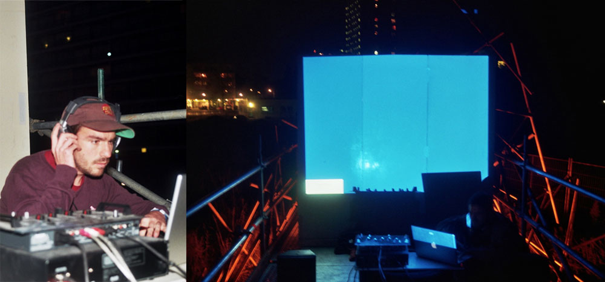

| < vorige | Terug naar overzicht |
Project De Pier van Dordt / 2008
[Baracca Project kunst in de openbare ruimte met div. Workshops, eet- en muziekperformances, muurtekeningen, rondleidingen etc.]
Kunstwerk ‘De Pier van Dordt’ door Baracca & Thijs Ebbe Fokkens met hulp van Denis Oudendijk, Boris Duijneveld, Sander van Heerde
Muurschilderingen van Iwan van ’t Spijker, CxC, Aam Solleveld, Bruno Ferro Xavier da Silva, Los Bastardos, Ton Kraayeveld, Bas Bus, Melle de Boer, Lizan Freijsen, Johan Gustavson, Dit is dit en Zeloot
Lichtshow Do not x-ray, belichting Pier ontwerp Denis Oudendijk
Buitenbioscoop met films van o.a. Battal Kurt en Yvo van der Vat
Muziekoptredens van Hamid Bazi, Leonieke de Kleer, dj-Pat, Jazztrio Eric Ineke [met Sjoerd Dijkhuizen en Marius Beets], Roy Santiago, Appie Kim, Melle de boer, The Dust Bowl Drifters, en de Rotte Herders
Eetperformances van Farhad Passajev, Harold de Bree, Ibrahim R. Ineke, Rene en Joost
Workshop autobanden van Refunc.nl
Workshop Graffitti van Grafficility
Workshop Polaroid fotografie Manuela porceddu
www.baracca.nl >


